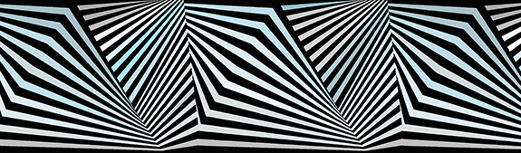

Civilizational Habits
An installation, featuring an immersive dazzle camouflage
space, optionally involving
a performer, and reflecting on the involvement of art and artists in military industrial
complex.
The dazzle camouflage — was designed and painted by artists on the surfaces of naval ships. This peculiarity, which emerged in the evolution of military industry, is picturesque as much as it is revealing the absurdity of the war machine. It was not only prepared, but also depicted by the artists of the era, and it is still widly referenced.
The installation can be realized in many variants, depending on the space and conditions. For example the outside of the ship or one of the rooms inside could be covered with this pattern:
Our aim is to engage the visitors into the playful experience of optical illusion.
The room is completely dark with one spotlight traversing through the dazzle patterns. Therefore the visitor see only certain parts of the stripes revealed — the experience referencing binocular view of the torpedo aiming device.
If the performer is involved, the costume would be the extension of the pattern (including the adequate face paint) and sometimes parts of the performer's body would appear in the spotlight as well — resembling the war dynamic of a hunter and the one being hunted.
The visitor's perception:
There is a heavy black curtain in front of me, covering the entry, am I supposed to enter? Next to it I see a photograph of a massive ship which looks like a military vessel, but it's covered in a weird zebra-like pattern. I push through the velvet of the curtain to enter this space. It's very dark in there, but there is a spotlight, a search light traversing the walls and the floor. It's slightly annoying because of the black and white stripes continuously revealed in the circle of light. But there is something more in there. Some object which I can see for glimpses of time. The pattern is bending the space, so at the beginning it's impossible to tell what it is. After a while I see it is a human dressed in the same pattern. The "zebra" camouflage makes it uncanny ...
The industrial revolution was not only producing civilizational advancement, but also the machines of destruction. The installation is trying to metaphorically meditate on this subject, while using the original camouflage aesthetics in a more surreal setup. Being hidden in a plain sight is an apocryphal reference to the iconic Hito Steyerl's How Not to be Seen. A Fucking Didactic Educational .MOV File. The title of the installation — Civilizational Habits — is borrowed from Peter Zelenka's film The Buttoners, where the urge for using nuclear weapons of mass destruction is subtly connotated with fetishism, ambition, ordinary civilizational habits and cultural scripts.